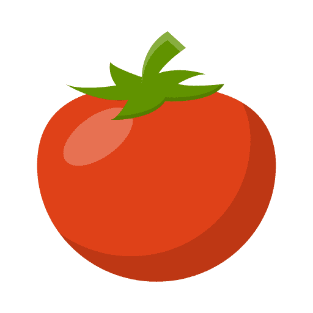

<app-header [showMenu]="true" title="Seleccione un sensor"></app-header>

<ion-content [fullscreen]="true">
  <ion-list>
    <ion-list>
      <ion-item-sliding>
        <ion-item>
          <ion-avatar>
            
          </ion-avatar>
            <ion-label>
              <div class="name">Sensor Hibernadero Norte</div>
              <div class="data">
                <strong>Descripción: {{ 'Tomates' }}</strong><br>
                <strong>Temperatura: {{ '21°C'}}</strong><br>
                <strong>Humedad: {{ '80%' }}</strong>
              </div>
            </ion-label>
        </ion-item>
      </ion-item-sliding>
    </ion-list>
  </ion-list>
</ion-content>
